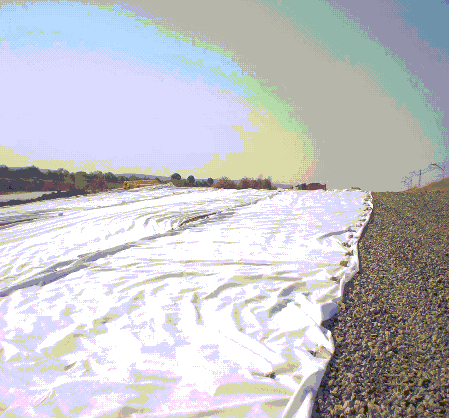

retroceder
retroceder
Dependiendo de las funciones y del campo de aplicación donde se utilizará el geotextil Geotesan, los parámetros importantes variarán. En cualquier caso, el único parámetro que no tiene ninguna importancia es el peso del geotextil, pues no es un dato que nos aporte ningún indicativo de sus valores mecánicos e hidráulicos, que son en definitiva los datos importantes de un geotextil. Esto es debido a que, como hemos visto anteriormente, casi todas las funciones del geotextil, se derivan de su capacidad para dejar pasar el agua y retener los finos (caracteristicas hidráulicas), soportar las tensiones mecánicas derivadas del terreno que ha de soportar o de las solicitaciones dinámicas de tráfico etc. (caracteristicas mecánicas), asi como el espesor y resistencia al punzonamiento en el caso de protección de geomembranas. Todos estos parámetros varían considerablemente de unos geotextiles a otros, midiéndolos bajo el parámetro del peso. En cualquier caso, y dependiendo de sus funciones y campos de aplicación, los parámetros fundamentales son los aportados en las tablas de características que veremos después.
